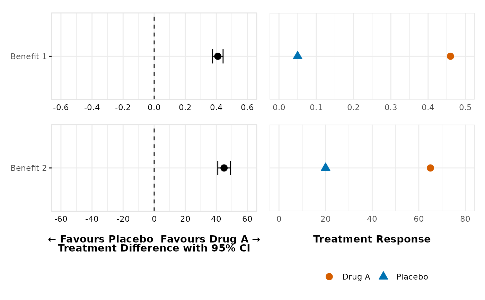
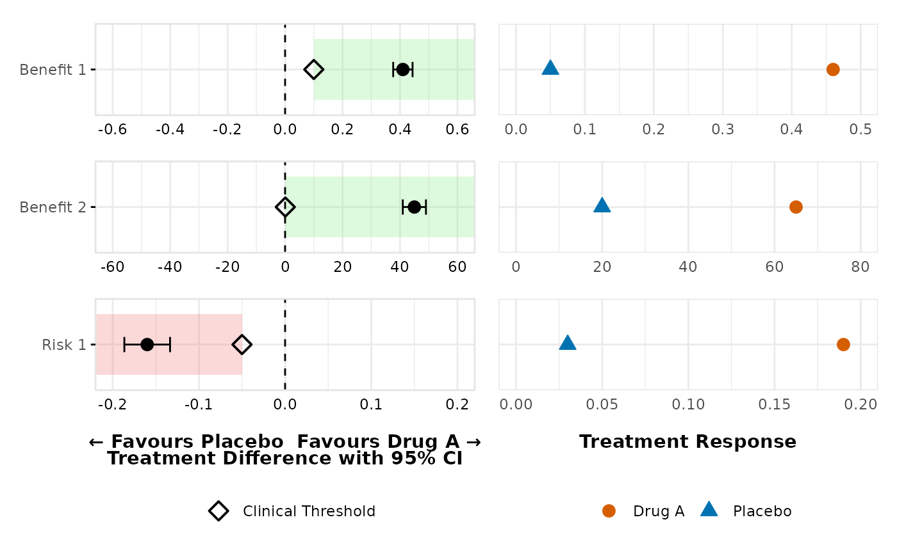
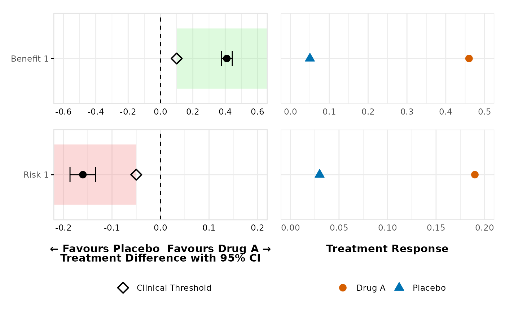

Create Forest and Dot Plots for Treatment Effects
create_forest_dot_plot.RdGenerates side-by-side forest and dot plots for specified outcomes, grouped by factor and type. Displays treatment effects, confidence intervals, and optional clinical thresholds.
Usage
create_forest_dot_plot(
data,
outcomes_with_thresholds = NULL,
treatment1 = "Drug A",
treatment2 = "Placebo",
filter_value = "None",
precalculated_stats = FALSE,
forest_upper_limit = NULL
)Arguments
- data
A data frame prepared using
prepare_forest_dot_data()or with matching structure.- outcomes_with_thresholds
Either NULL (uses all available outcomes with no thresholds), a character vector of outcome names to include (with no thresholds), or a named list where names are outcomes and values are thresholds. For lists, directions default to "greater" for positive values and "less" for negative values, or can be specified as list(outcome = list(threshold = 0.1, direction = "greater")).
- treatment1
Character; label of the first treatment group (default:
"Drug A").- treatment2
Character; label of the second treatment group (default:
"Placebo").- filter_value
Character; value used to filter the
Filtercolumn (default:"None").- precalculated_stats
Logical; if
TRUE, skips calculation and uses provided statistics.- forest_upper_limit
Numeric; optional upper limit for the forest plot, adds a reference line at this value if provided.
Examples
# First, prepare the data
prepared_data <- prepare_forest_dot_data(effects_table)
# Generate the plot using all available outcomes with no thresholds
dotforest <- create_forest_dot_plot(prepared_data)
if (FALSE) { # \dontrun{
ggsave_custom("dotforest.png", imgpath = "./", inplot = dotforest, dpi = 300)
} # }
# Use only specific outcomes with no thresholds
create_forest_dot_plot(prepared_data,
outcomes_with_thresholds = c("Benefit 1", "Benefit 2")
)

# Custom thresholds with automatic direction detection
create_forest_dot_plot(prepared_data,
outcomes_with_thresholds = list(
"Benefit 1" = 0.10,
"Benefit 2" = 0.08,
"Risk 1" = -0.05
)
)

# Custom thresholds with explicit directions
create_forest_dot_plot(prepared_data,
outcomes_with_thresholds = list(
"Benefit 1" = list(threshold = 0.10, direction = "greater"),
"Risk 1" = list(threshold = -0.05, direction = "less")
)
)
